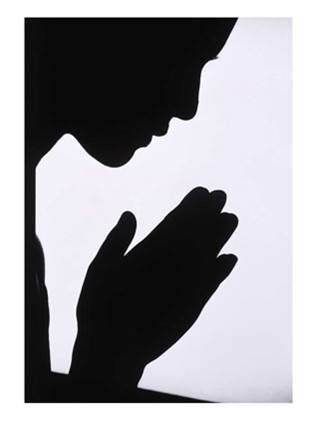

Growing a loving church by transforming lives and building dreams.
A warm, Christ-centered church family where all are welcome to worship, grow, serve, and belong.
A church for worship, family, and community.
Whether you are new to church, returning to faith, or looking for a church home, Colosse Baptist Church welcomes you.
Next Steps
The same admin-managed links are presented here as bold, simple pathways.
Church Calendar
See upcoming services, meetings, and church events.

Prayer & Forms
Submit prayer requests, announcements, and church forms.
Church Ministries
Explore opportunities for children, youth, adults, and families.
Vacation Bible School
Vacation Bible School is a fun and engaging week where children learn about God's love through Bible lessons, music, games, crafts, activities, and fellowship. VBS provides a welcoming environment for children to grow in their faith, build friendships, and discover the joy of following Christ.
Plan Your Visit
A warm, Christ-centered church family where all are welcome to worship, grow, serve, and belong.